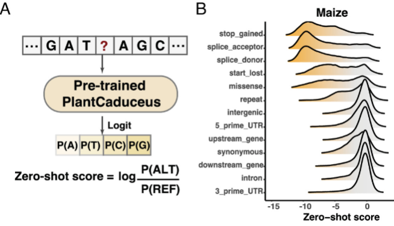
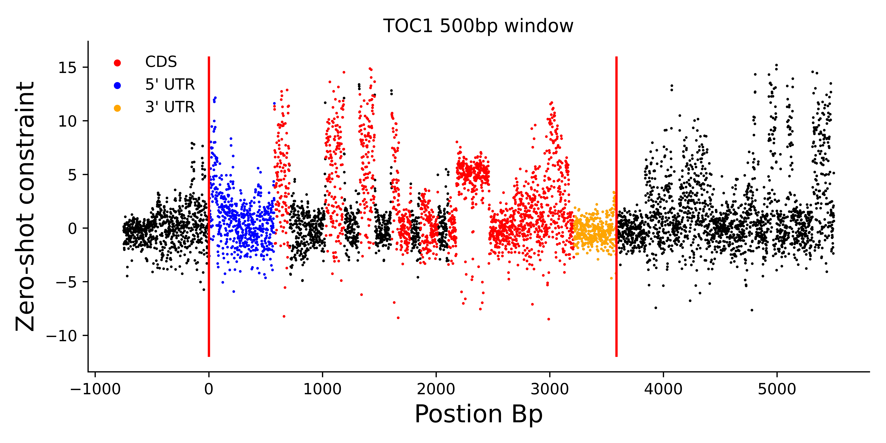
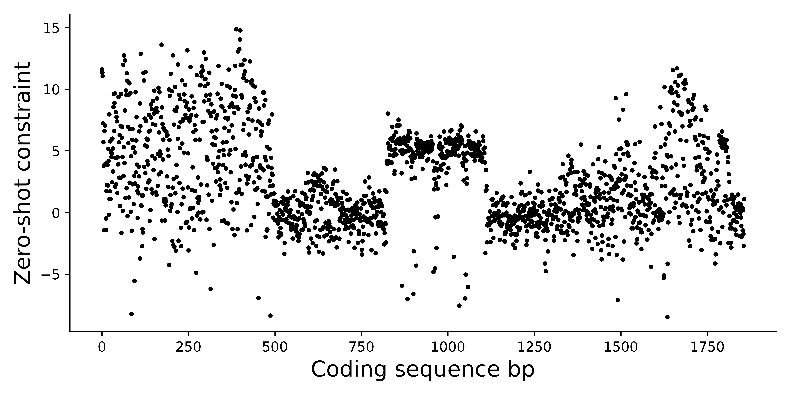
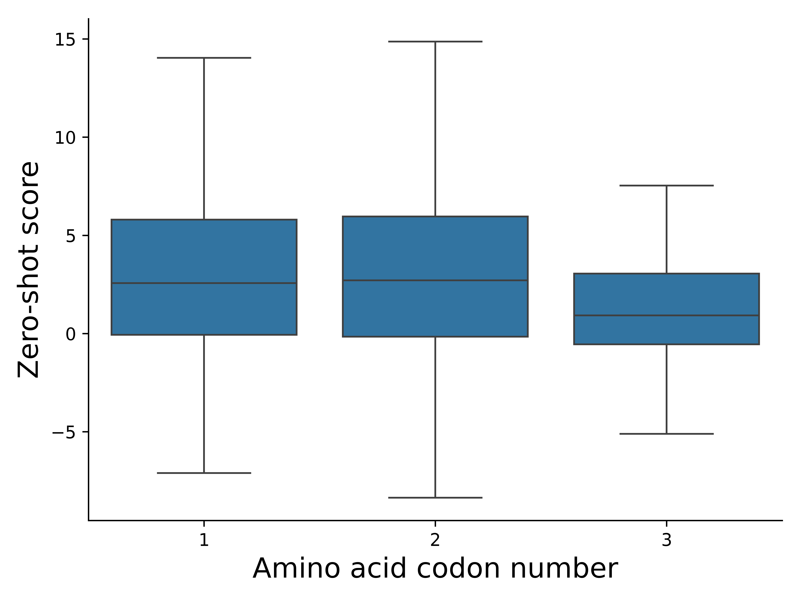
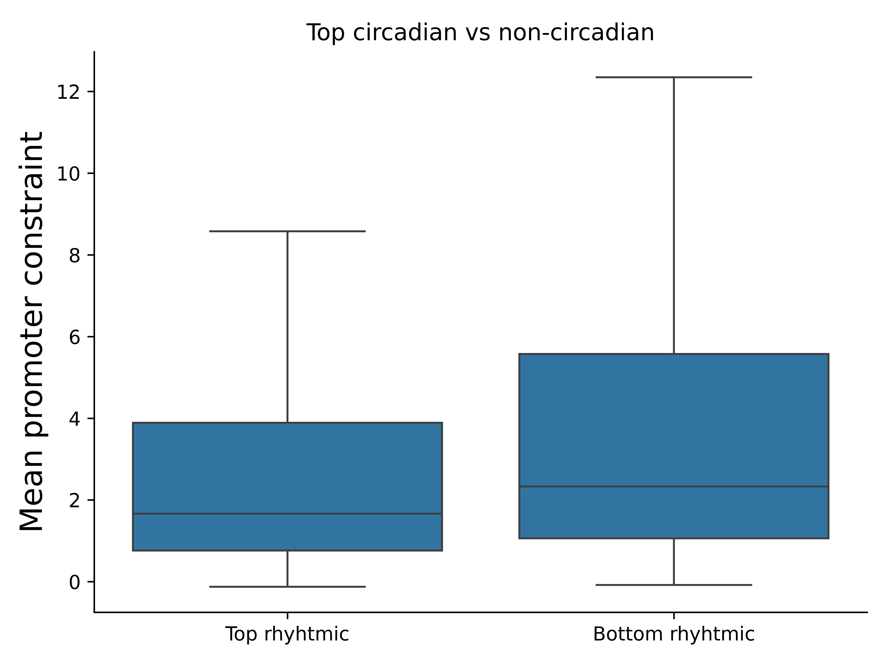
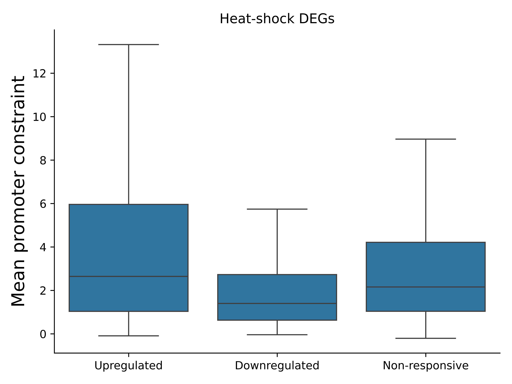
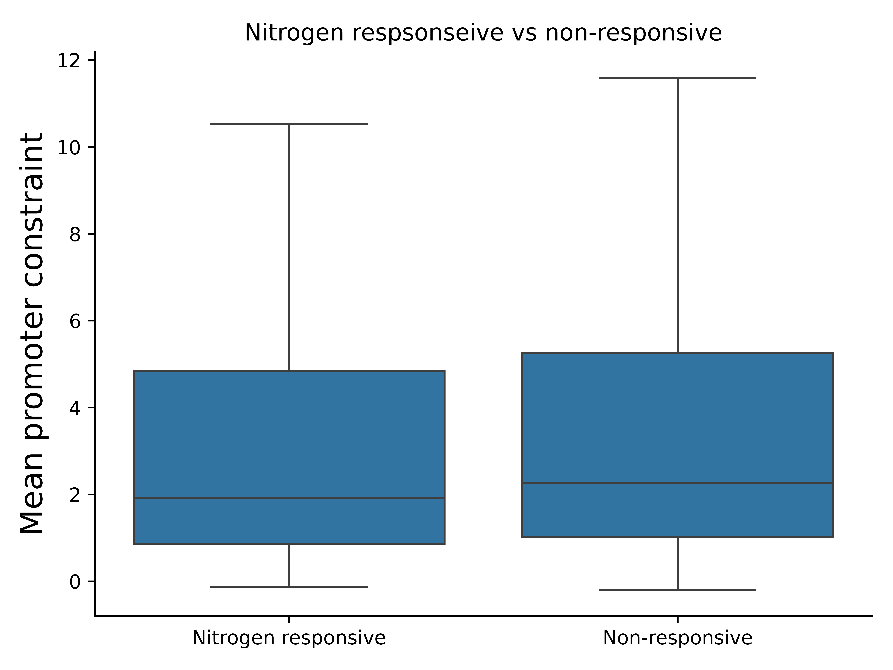

Evolutionary constraint analysis
PlantCAD2 is a genomics large-language-model (gLLM) which has been pre-trained to impute the bases of masked nucleotides across plant DNA sequences. By doing this across millions of sequences in 65 angiosperms, it learns patterns and the "gramma" of many plant genomes.
Foundation models like PlantCAD2 are ideal for fine-tuning to new tasks, meaning their original base imputation head can be replaced with a new regressor or classifier which predicts a new target. This enables PlantCAD2 to use patterns learned during pre-training to a different task that is still expected to rely on patterns in the DNA sequence.
However, BERT-like models such as PlantCAD2 also offer the ability to approximate evolutionary constraint using the original base imputation head. This zero-shot method was highlighted in Figure 4 of the original PlantCAD paper:

As shown, the softmax of the logit outputs for each base are used to score each masked nucleotide based on how "confidently" the model predicts the true reference base compared with an alternative base. This appears to represent evolutionary constraint, as more functional sites tend to give stronger constraint compared to less functional sites, like introns.
The approach in the PlantCAD paper was limited, using only a few targeted test sites to evaluate the constraint analysis. This limitation was likely because each nucleotide must be masked one-at-a-time within a 500bp context sequence, thus being computationally costly to pass hundreds of millions of masked windows through the pre-trained model.
I was awarded a grant giving me access to 10,000 GPU hours using the Isambard-AI UK supercomputing facility. This enabled me to complete a zero-shot analysis across ~30,000 Arabidopsis genes - potentially being the first AI-driven evolutionary constraint mapping of a plant genome.
An example can be shown for the circadian clock gene TOC1:

Here, we see clearly that the coding regions of TOC1 are significantly more constrained compared with other regions including UTRs and introns, with sparse peaks in the promoter region.
Focusing specifically on TOC1's coding sequence, we can see patterns emerge:

The high constraint regions at the beginning and end of the sequence represent known functional domains, while the centre represents disordered residues. What is that floating artefact in the centre? That is a tandem repeat region - it appears to have high evolutionary constraint as it is a common feature to TOC1 genes across angiosperms.
Looking at the 3rd nucleotide representing each codon, it is significantly less constrained that the 1st and 2nd nucleotide:

This is expected. The 3rd nucleotide in a codon is often more redundant, thus can be less constrained without impacting protein function.
Some simple explorations of our constraint map includes comparing the constraint predicted in promoter regions of different classes of genes.
This includes circadian vs non-circadian genes:

Upregulated vs downregulated vs non-responsive genes to heatshock:

Nitrogen responsive vs non-responsive genes:

These significant differences in promoter constraint reflect only the beginning of our work in AI-driven evolutionary constraint.